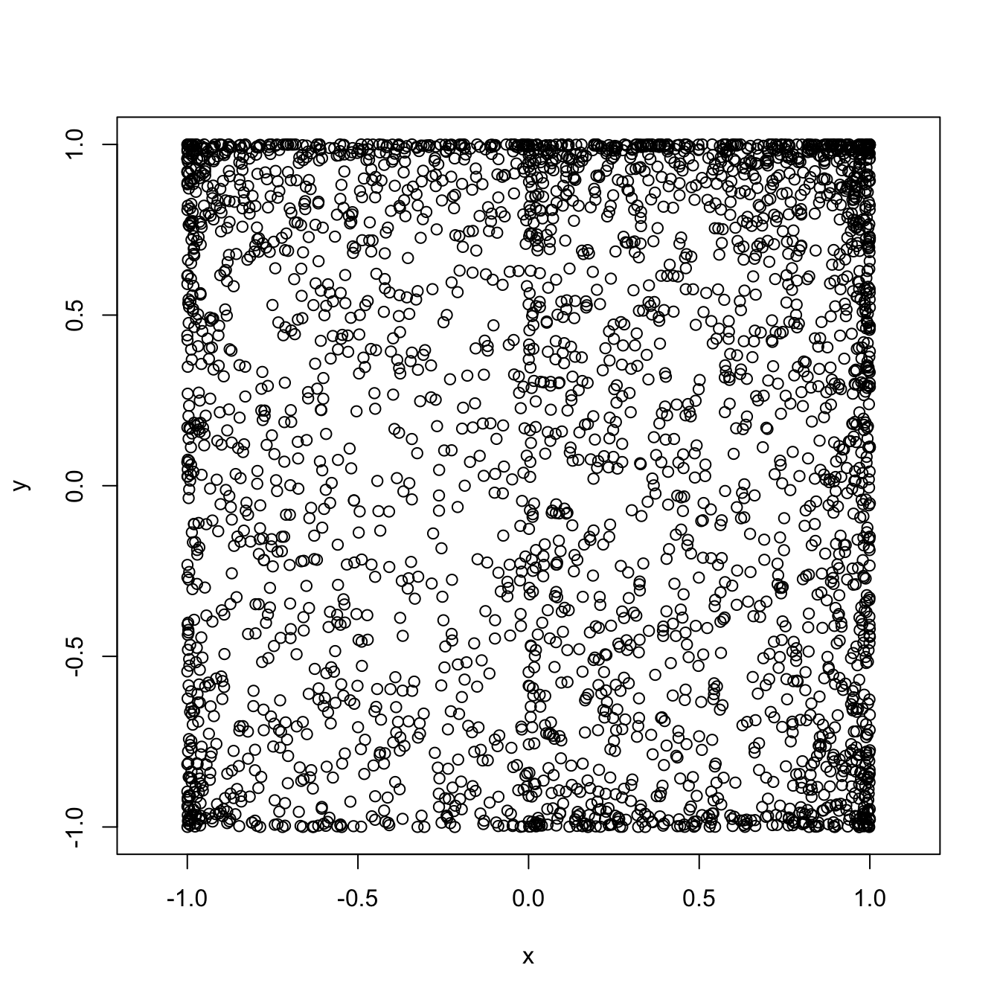
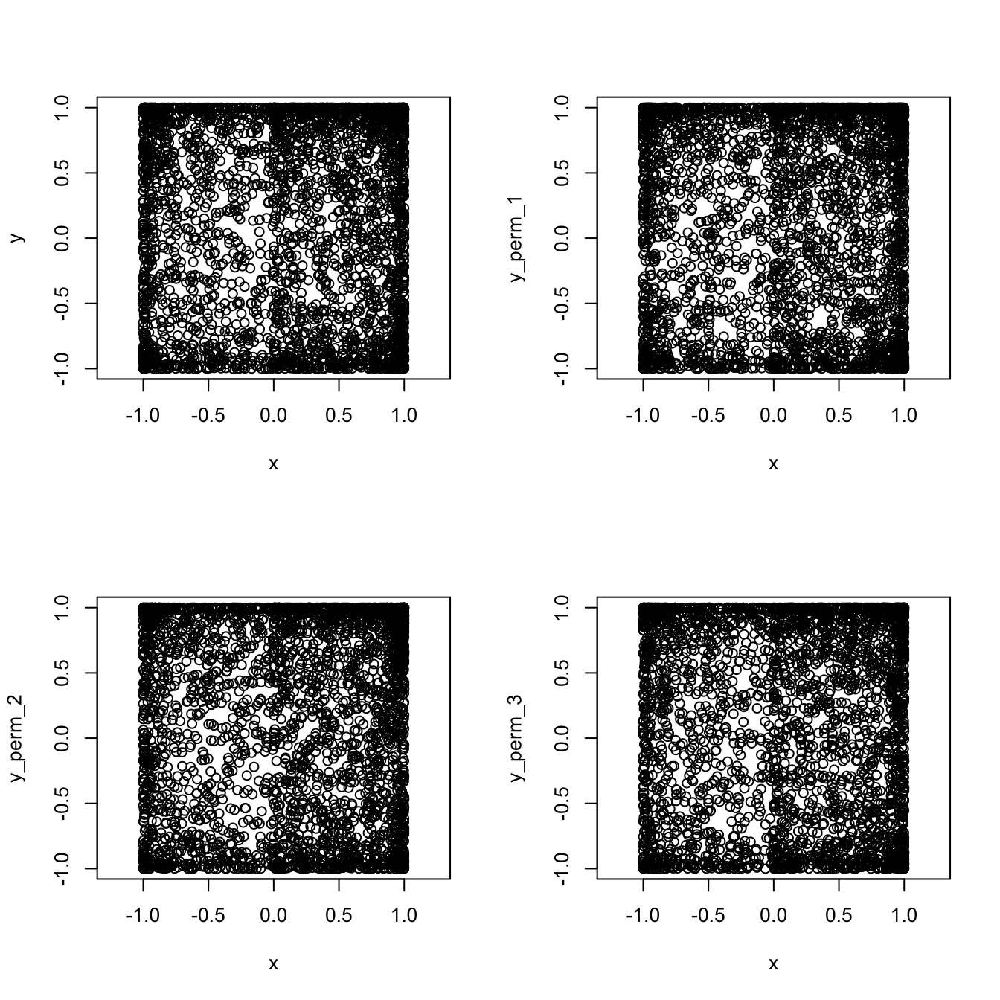

Chapter 2 Simulation of Random Variables and Monte Carlo
In the spirit of “learn by doing”, these lecture notes are composed mostly of problems. Those with solutions usually introduce new concepts and feature a Comments section right after the solution. These comments are subdivided into R and Math comments focusing on the computational or coneceptual features, respectively. Note that you are not expected to be able to do the solved problems before reading their solutions and comments, so don’t worry if you cannot. It is a good practice to try, though. Problems unsolved in these notes, however, do not feature any new ideas and are there to help you practice the skills presented before.
2.1 How to simulate some common probability distributions
Solution:
rgeom(50,prob=0.4)
#R> [1] 1 0 3 4 1 2 0 0 2 2 0 1 5 0 1 0 2 1 1 0 2 2 2 1 0 0 1 3 2 2 1 1 1 3 5
#R> [36] 0 1 1 0 0 0 1 2 0 1 1 1 0 1 0Comments
R: R makes it very easy to simulate draws from one of the named distributions, such as geometric, binomial, uniform, normal, etc. For a list of all available distributions, run help("distributions") Each available distribution has an R name; the uniform is unif the normal is norm and the binomial is binom, etc. If you want to simulate \(n\) draws (aka a sample of size \(n\)) from a distribution, you form a full command by appending the letter r to its R name and use \(n\) as an argument. That is how we arrived to rgeom(50) in the solution above. The additional arguments of rgeom have to do with the parameters of that distribution. Which parameters go with which distributions, and how to input them as arguments to rgeom or rnorm is best looked up in R’s extensive documentation. Try help("rnorm"), for example.
| 0 | 1 | 2 | 3 | 4 | 5 | 6 | 7 | … | |
|---|---|---|---|---|---|---|---|---|---|
| Prob. | 0.4 | 0.24 | 0.144 | 0.086 | 0.052 | 0.031 | 0.019 | 0.011 | … |
Of course, the possible values our random variable can take do not stop at \(7\). In fact, there are infinitely many possible values, but we do not have infinite space. Note that, even though, the value \(17\) does not appear in the output of the command rgeom above, it probably would if we simulated more than \(50\) values. Let’s try it with \(500\) draws:
| 0 | 1 | 2 | 3 | 4 | 5 | 6 | 7 | 8 | 9 | 10 |
|---|---|---|---|---|---|---|---|---|---|---|
| 208 | 132 | 62 | 43 | 23 | 16 | 8 | 3 | 2 | 1 | 2 |
Still no luck, but we do observe values above 5 more often. By trial and error, we arrive at about \(1,000,000\) as the required number of simulations:
| 0 | 1 | 2 | 3 | … | 23 | 24 | 25 | 26 |
|---|---|---|---|---|---|---|---|---|
| 400616 | 238946 | 144274 | 86489 | … | 3 | 3 | 3 | 3 |
Solution: First, we compute the probability that the value seen in a single draw does not exceed \(22\):
Different draws are independent of each other, so we need to raise this to the power \(1,000,000\).
Comments:
R. The command we used here is pgeom which is a cousin of rgeom. In general R commands that involve named probability distributions consist of two parts. The prefix, i.e., the initial letter (p in this case) stands for the operation you want to perform, and the rest is the R name of the distribution. There are 4 prefixes, and the commands they produce are
| Prefix | Description |
|---|---|
r |
Simulate random draws from the distribution. |
p |
Compute the cumulative probability distribution function (cdf) |
d |
Compute the probability density (pdf) or the probability mass function (pmf) |
q |
Compute the quantile function |
(see the Math section below for the reminder of what these things are. ) In this problem, we are dealing with a geometric random variable \(X\), which has a discrete distribution, with support \(0,1,2,3,\dots\). Therefore, the R name is geom. We are interested in the probability \({\mathbb{P}}[ X\leq 22]\), which corresponds to the cdf of \(X\) at \(x=22\), so we use the
the prefix p. Finally, we used the named parameter p and gave it the value p = 0.4, because the geometric distribution has a single parameter \(p\).
This problem also gives us a chance to discuss precision. As you can see, the probability of a single draw not exceeding \(22\) is very close to \(1\). In fact, it is equal to it to 5 decimal places. By default, R displays 7 significant digits of a number. That is enough for most applications, but sometimes we need more precision. For example, let’s try to compute the probability of seeing no T (tails) in 10 tosses of a biased coin, where the probability of H (heads) is 0.9.
While small, this probability is clearly not equal to \(1\), as suggested by the output above.
The culprit is the default precision. We can increase the precision (up to \(22\) digits) by running options(digits=14)
Problems like this should not appear in this course, but they will out there “in the wild”, so it might be a good idea to be aware of them.
Math. If you forgot all about pdfs, cdfs and such things here is a little reminder: And here is a reminder what these quantities are:
| cdf | \(F(x) = {\mathbb{P}}[X\leq x]\) |
| \(f(x)\) such that \(\int_a^b f(x) \, dx = {\mathbb{P}}[X \in [a,b]]\) for all \(a<b\) | |
| pmf | \(p(x)\) such that \({\mathbb{P}}[X=a_n] = p(a_n)\) for some sequence \(a_n\) |
| qf | \(q(p)\) is a number such that \({\mathbb{P}}[ X \leq q(p)] = p\) |
Those random variables that admit a pdf are called continuous. The prime examples are the normal, or the exponential distribution. The ones where a pmf exists are called discrete. The sequence \(a_n\) is simply the sequence of all values that such a, discrete, random variable can take. Most often, \(a_n\) is either the set of all natural numbers \(0,1,2,\dots\) or a finite subset such that \(0,1,2,3,4,5\), called the support of the distribution.
Btw, this probability we obtained is quite small. Since \(1/0.000372\) is about \(2690\), we would have to run about \(2690\) rounds of \(1,000,000\) simulations before the largest number falls below \(23\).
Solution:
qnorm( c(0.05, 0.1, 0.4, 0.6, 0.95), mean = 1, sd = 2)
#R> [1] -2.2897073 -1.5631031 0.4933058 1.5066942 4.2897073R. The function we used is qnorm, with the prefix q which computes the quantile function and the R name norm because we are looking for the quantiles of the normal distribution. The additinal (named) parameters are where the parameters of the distribution come in (the mean and the standard variation) in this case. Note how we plugged in the entire vector c(0.05, 0.1, 0.4, 0.6, 0.98) instead of a single value into qnorm. You can do that because this function is vectorized. That means that if you give it a vector as an argument, it will return a vector with values corresponding to each element of the input. Many (but not all) functions in R are vectorized.
As a sanity check, let’s apply the cdf to these quantile values:
p <- qnorm( c(0.05, 0.1, 0.4, 0.6, 0.95), mean = 1, sd = 2)
pnorm( p , mean = 1, sd = 2)
#R> [1] 0.05 0.10 0.40 0.60 0.95As expected, we got the original values back - the normal quantile function and its cdf are inverses of each other.
Solution:
sample( 1:10 , 60, replace = TRUE)
#R> [1] 2 8 9 8 4 7 7 7 2 3 3 10 6 1 9 7 4 7 6 2 2 3 10
#R> [24] 1 9 7 3 2 8 4 1 2 8 1 4 9 1 9 10 10 6 1 8 6 1 10
#R> [47] 5 1 6 9 8 3 8 9 4 6 1 6 7 8Comments:
Math. Let \(X\) denote the outcome of a single throw of this strange die. The distribution of \(X\) is discrete (it can only take the values \(1,2,\dots, n\)) but it is not one of the named distributions. The way we describe such distribution is by a distribution table, which is really just a list of possible values a random variable can take, together with their, respective, probabilities.
| 1 | 2 | 3 | 4 | 5 | 6 | 7 | 8 | 9 | 10 |
|---|---|---|---|---|---|---|---|---|---|
| 0.1 | 0.1 | 0.1 | 0.1 | 0.1 | 0.1 | 0.1 | 0.1 | 0.1 | 0.1 |
R. The command used to draw a sample from a (finite) collection is, of, course sample. The first argument is a vector, and it contains the “bag” from which you are drawing. If we are interested in repeated, random samples, we also need to specity replace = FALSE otherwise, you could draw any signle number am most once:
With more than 10 draws, we would run out of numbers to draw:
sample(1:10, 12, replace = FALSE)
#R> Error in sample.int(length(x), size, replace, prob): cannot take a sample larger than the population when 'replace = FALSE'The bag you draw from can contain objects other than numbers:
sample( c("Alice", "Bob", "Charlie"), 8, replace = TRUE)
#R> [1] "Charlie" "Bob" "Alice" "Charlie" "Bob" "Charlie" "Charlie"
#R> [8] "Charlie"sample command to produce a weighted sample, too. For example, if we wanted to simulate \(10\) draws from the following distribution
| 1 | 2 | 3 |
|---|---|---|
| 0.2 | 0.7 | 0.1 |
we would use the additional argument prob:
Note how it is mostly \(2\)s.
Solution:


 Comments:
Comments:
R. It cannot be simpler! You use the command hist, feed it a vector of values, and it produces a histogram. It will even labels the axes. If you want to learn how to tweak various features of your histogram, type ?hist.
Esthetically, the built-in histograms leave something to be desired. We can do better, using the package ggplot2. You don’t have to use it in this class, but if you want to, you install it first by running install.packages("ggplot2") (you have to do this only once). Then, every time you want to use it, you run library(ggplot2) to notify R that you are aobut to use a function from that package. It would take a whole semester to learn everything there is to know about ggplot2; I will only show what a histogram looks like in it:
 Math. Mathematically, histogram can be produced for any (finite) sequence of numbers: we divide the range into several bins, count how many of the points in the sequence falls into which bin, and then draw a bar above that bin whose height is equal (or proportional to) that count. The picture tells use about how the sequence we started from is “distributed”. The order of the points does not matter - you would get exactly the same picture if you presorted the points. If the sequence of points you draw the histogram comes from, say, normal distribution, the histogram will resemble the shape of the pdf of a normal distribution. I say resemble, because its shape is ultimately random. If the number of points is small (like in the second part of this problem) the histogram may look nothing like the normal pdf. However, when the number of points gets larger and larger, the shape of the histogram gets closer and closer to the underlying pdf (if it exists). I keep writing “shape” because the the three histograms above have very different scales on the \(y\) axis. That is because we used counts to set the sizes of bins. A more natural choice is to use the proportions, i.e. relative frequencies (i.e. counts divided by the total number of points) for bar heights. In R, we would need to add an additional option to
Math. Mathematically, histogram can be produced for any (finite) sequence of numbers: we divide the range into several bins, count how many of the points in the sequence falls into which bin, and then draw a bar above that bin whose height is equal (or proportional to) that count. The picture tells use about how the sequence we started from is “distributed”. The order of the points does not matter - you would get exactly the same picture if you presorted the points. If the sequence of points you draw the histogram comes from, say, normal distribution, the histogram will resemble the shape of the pdf of a normal distribution. I say resemble, because its shape is ultimately random. If the number of points is small (like in the second part of this problem) the histogram may look nothing like the normal pdf. However, when the number of points gets larger and larger, the shape of the histogram gets closer and closer to the underlying pdf (if it exists). I keep writing “shape” because the the three histograms above have very different scales on the \(y\) axis. That is because we used counts to set the sizes of bins. A more natural choice is to use the proportions, i.e. relative frequencies (i.e. counts divided by the total number of points) for bar heights. In R, we would need to add an additional option to hist:

With such a normalization, the histogram of \(x\) can be directly compared to the probability density of a normal distribution. Here is a picture. Its R code is a little bit too advanced for now, so I am skipping it:

2.2 Monte Carlo
Solution:
For an exponential random variable with parameter \(\lambda\), the expected value is \(1/\lambda\); in this case \(0.25\). The error made was 0.072023 for \(n=10\) simulations. We increase the numbner of simulations to \(n=1000\) and get a better result
with (smaller) error -0.0064643. Finally, let’s try \(n=1,000,000\):
The error is even smaller -0.00038101.
This can be obtained quite easily by integration (by parts): \[ {\mathbb{E}}[X] = \int_{-\infty}^{\infty} x f(x)\, dx = \int_0^{\infty} x \lambda e^{-\lambda x}\, dx = \tfrac{1}{\lambda}\]
Comments:
R. The only new thing here is the command mean which computes the mean of vector.
Math. There is a lot going on here conceptually. This is the first time we used the Monte Carlo method. It is an incredibly method, as you will keep being reminded throughout this class. The idea behind it is simple, and it is based on the Law of large numbers:
Theorem Let \(X_1,X_2, \dots\) be an independent sequence of random variables with the same distribution, for which the expected value can be computed. Then
\[ \tfrac{1}{n} \Big( X_1+X_2+\dots+X_n\Big) \to {\mathbb{E}}[X_1] \text{ as } n\to\infty\]
The idea behind Monte Carlo is to turn this theorem “upside down”. The goal is to compute \({\mathbb{E}}[X_1]\), and uses a supply of random numbers, each of which comes from the same distribution to accomplish that. The random number generator inside rexp gives us a supply of numbers (stored in the vector x) and all we have to do is compute their average. This gives us the left-hand side of the formula above, and, if \(n\) is large enough, we hope that the this average does not differ too much from its theoretical limit. As \(n\) gets larger, we expect better and better results. That is why your error above gets smaller as \(n\) increases.
It looks like Monte Carlo can only be used to compute the expected value of a random variable, which does not seem like such a bit deal. It is! You will see in the sequel that almost anything can be written as the expected value of some random variable.
Solution. When \(X\) is standard normal \(Y=X^2\) has a \(\chi^2\) distribution with one degree of freedom:
In the second case, we do not know the distribution of \(X^2\), but can still do the following:
Comments:
Math+R. We are asked to compute \({\mathbb{E}}[ X^2]\), which can be interpreted in two ways. First, we can think of \(Y=X^2\) as a random variable in its own and try to take draws from the distribution of \(Y\). In the case of the normal distribution, the distribution of \(Y\) is known - it happens to be a \(\chi^2\)-distribution with a single degree of freedom (don’t worry if you never heard of it). We can simulate it in R by using its R name chisq and
get a number close to the exact value of \(1\).
The case of a geometric distribution is seemingly more difficult, because we do not know what the distribution of \(Y=X^2\) is and there is no corresponding R name to put the prefix r in front of. What makes the simulation possible is the fact that \(Y\) is a transformation of
a random variable we know how to simulate. In that case, we simply simulate the required number of draws x from the geometric distribution (using rgeom) and then apply the transformation \(x \mapsto x^2\) to the result. The transformed vector y is then nothing but the sequence of draws from the distribution of \(X^2\). Btw, we could have done the same thing in the case of the normal random variable, too - there was no need to recoqnize its square as a \(\chi^2\) random variable:
The idea described above is one of main advantages of the Monte Carlo technique: if you know how to simulated a random variable, you also know how to simulated any (deterministic) function of it. That fact will come into its own a bit later when we start working with several random variables and stochastic processes, but it can be very helpful even in the case of a single random variable, as you will see in the next problem.
Solution: The estimated probability:
The exact probability:
The error is -0.0013353.
Comments:
Math. We constructed an